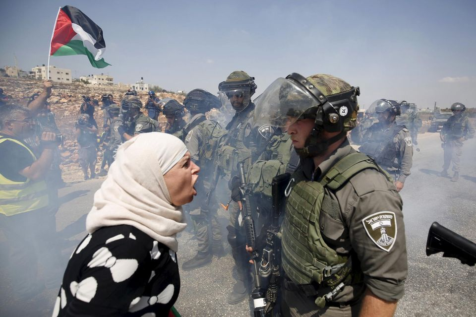

PALASTINE :
The history of Palestine is the study of the past in the region of Palestine, generally defined as a geographic region in the Southern Levant between
he Mediterranean Sea and the Jordan River (where Israel and Palestine are today), and various adjoining lands. Situated at a strategic point between Europe, Asia, and Africa, and the birthplace of Judaism and Christianity,[1] the region has a long and tumultuous
history as a crossroads for religion, culture, commerce, and politics. In ancient times, Palestine was intermittently controlled by several independent kingdoms and numerous great powers, including Ancient Egypt, Persia, Alexander the Great and his
successors, the Roman Empire, several Muslim dynasties, and the Crusaders. In modern times, the area was ruled by the Ottoman Empire, then the United Kingdom. Since 1948, Palestine has been divided into Israel, the West Bank and the Gaza Strip. Other terms for approximately the same geographic area include Canaan, Zion, the Land of Israel, Southern Syria, Outremer and the Holy Land.
The region was among the earliest in the world to see human habitation, agricultural communities and civilization...